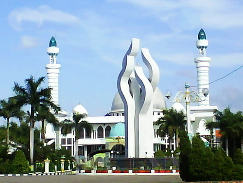

Pulau Madura

Madura adalah nama pulau yang terletak di sebelah timur laut Jawa Timur. Jembatan Nasional Suramadu merupakan pintu masuk utama menuju Madura, selain itu untuk menuju pulau ini bisa dilalui dari jalur laut ataupun melalui jalur udara. Untuk jalur laut, bisa dilalui dari Pelabuhan Tanjung Perak di Surabaya menuju Pelabuhan Kamal di bangkalan, Selain itu juga bisa dilalui dari Pelabuhan Jangkar Situbondo menuju Pelabuhan Kalianget di Sumenep, ujung timur Madura. Pulau Madura bentuknya seakan mirip badan sapi, terdiri dari empat Kabupaten, yaitu: Bangkalan, Sampang, Pamekasan dan Sumenep. Madura, Pulau dengan sejarahnya yang panjang, tercermin dari budaya dan keseniannya dengan pengaruh islamnya yang kuat.
Geografis
Secara geografis Pulau Madura dibagi menjadi 4 kabupaten, yaitu :
Pamekasan
Kabupaten Pamekasan adalah sebuah kabupaten di Pulau Madura, Provinsi Jawa Timur, Indonesia. Ibu kotanya adalah Pamekasan. Kabupaten ini berbatasan dengan Laut Jawa di utara, Selat Madura di selatan, Kabupaten Sampang di barat, dan Kabupaten Sumenep di timur. Kabupaten Pamekasan terdiri atas 13 kecamatan, yang dibagi lagi atas 178 desa dan 11 kelurahan. Pusat pemerintahannya ada di Kecamatan Pamekasan.
Sumenep
Kabupaten Sumenep adalah sebuah kabupaten di provinsi Jawa Timur, Indonesia. Kabupaten ini memiliki luas wilayah 2.093,45 km² dan populasi 1.041.915 jiwa. Ibu kotanya ialah Kota Sumenep. Nama Songènèb sendiri dalam arti etimologinya merupakan Bahasa Kawi / Jawa Kuno yang jika diterjemaahkan mempunyai makna sebagai berikut: Kata “Sung” mempunyai arti sebuah relung/cekungan/lembah, dan kata “ènèb” yang berarti endapan yang tenang, maka jika diartikan lebih dalam lagi Songènèb / Songennep (dalam bahasa Madura) mempunyai arti "lembah/cekungan yang tenang".
Sampang
Kabupaten Sampang adalah sebuah kabupaten yang ada di sebelah utara bagian timur dari pulau Jawa tepatnya di Pulau Madura, Provinsi Jawa Timur, Indonesia. Ibu kotanya adalah Sampang. Kabupaten Sampang secara administrasi terletak dalam wilayah Provinsi Jawa Timur yang secara geografis terletak di antara 113o 08’ - 113o 39’ Bujur Timur dan 6o 05’ - 7o 13’ Lintang Selatan. Kabupaten Sampang terletak ± 100 Km dari Surabaya, dapat dengan melalui Jembatan Suramadu kira-kira 1,5 jam atau dengan perjalanan laut kurang lebih 45 menit dilanjutkan dengan perjalanan darat ± 2 jam.
Bangkalan
Kabupaten Bangkalan adalah sebuah kabupaten di Pulau Madura, Provinsi Jawa Timur, Indonesia. Ibu kotanya adalah Bangkalan. Kabupaten ini terletak di ujung paling barat Pulau Madura; berbatasan dengan Laut Jawa di utara, Kabupaten Sampang di timur serta Selat Madura di selatan dan barat. Pelabuhan Kamal merupakan pintu gerbang Madura dari Jawa, di mana terdapat layanan kapal feri yang menghubungkan Madura dengan Surabaya (Pelabuhan Ujung). Saat ini telah beroperasi Jembatan Suramadu (Surabaya-Madura) yang merupakan jembatan terpanjang di Indonesia. Kabupaten Bangkalan merupakan salah satu wilayah yang masuk dalam kawasan metropolitan Surabaya, yaitu Gerbangkertosusila. Kabupaten Bangkalan terdiri atas 18 kecamatan yang dibagi lagi atas sejumlah 273 desa dan 8 kelurahan. Pusat pemerintahannya berada di Kecamatan Bangkalan.